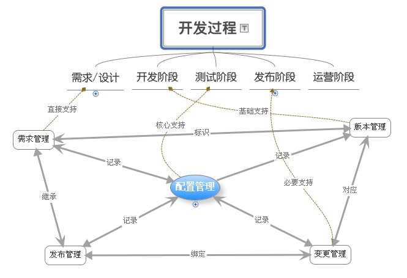
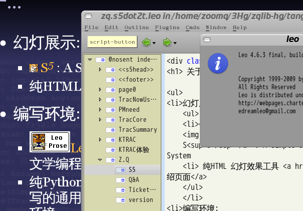

免责聲明
山寨的，非业界公认的，个人体验为基础!
参考所有同好行为总结而得
- 一切资料来自网络互动挖掘
- 一切想法来自日常学习工作
- 一切体悟来自各种沟通交流
- 一切知识来自社区分享印证
- 一切经验来自个人失败体验
......
 范畴::
范畴::
现状/体验/建议
- +5' Trac 现状
- +15'Trac 体验
- +15'KTRAC 经验
- +5' Ticket 翻译讨论
- +20'问答
class="incremental"...
现状
国际形势
class="incremental"...
用户:jQuery
知名Ajax 框架社区
class="incremental"...
用户:CherryPy
老牌Py web框架社区
class="incremental"...
用户:Twisted
电信级网络协议框架!
class="incremental"...
用户:Plone
企业级CMS 平台!
class="incremental"...
用户:OLPC
每童一电脑,上网教育本原创集团!
class="incremental"...
用户:Django
最火Py Web 应用框架
class="incremental"...
用户:Pidgin (Gaim)
制式多协议即时通讯工具

class="incremental"...
用户:VirtualBox
最易用虚拟机作品!
2010-01-22-194900_user-sikuli_scrot.png
中国企业用户
早已在列表中吼过...
class="incremental"...
项目管理...
关怀一个普适的需求领域...
必须知道
嘛?
class="incremental"...
任意团队:日常须知0
问题集...
有嘛事儿
What
...
任意团队:日常须知1
人力资源
有嘛人
Who
...
任意团队:日常须知2
任务限期
何时交?
When
...
任意团队:日常须知3
甲方...
交付给谁
Where
...
任意团队:日常须知4
指标!
咋算作好
Why
...
任意团队:日常须知5
过程
具体咋做
How
...
任意团队,不背黑锅,就得！
必须明确的工程元素!
5W1H
...
Trac 本质追求
核心思想
All Know All
AKA
...
本质行为
将维基的一切特性都用上了...
WiKi
...
Wiki:本质
不是Trac 选择了Wiki,而是Trac 天生是Wiki
AKA
...
Trac 自我定义
...
- 最轻量级Web项目管理环境
- 帮助团队写出伟大软件
- 尽可能不影响原有文化和流程
-
包含维基和提案系统的
核心功能,,,
相互关联的!
- TracWiki
- TracLinks
- TracTickets
- TracReports
- TracTimeline
- TracRoadmap
- TracSourceBrowse
...
默认流程
for 0.10
class="incremental"...
默认流程+
for 0.11
class="incremental"...
超级插件社区
和FireFox 一样简洁的接口引发了>..

class="incremental"...
日常使用
绝对的单纯!
- login
- {7} My Tickets
- fixing Tickets
- ...
...
覆盖全部任务生命周期
除了文档管理...

...
运营/客服/产品->问题/缺陷/需求
原始记录
Ticket
...
开发修订之
代码和任务通过TracWiki 字符串自然关联了起来！
TracLinks
...
自然绑定:timeline
收集各种项目变更信息

...
自然绑定:Changeset
通过TracWiki 的 TracLinks
...
自然绑定:Ticket
通过TracWiki 的 TracLinks
...
测试确认之
Bitten 自动化集成工具...
Bitten

...
Bitten之文档
Doxygen
运营部署之
各种版本系统都可绑定!
版本管理
...
Trac 体验小结:
总之一个足够靠谱好用的项目管理平台!
- 社区稳固,插件活跃
- 各种规模团队皆可
- 基于Wiki,和代码绑定自然
- 关注协同,重视交流
...
金山的Trac 体验
现状...运营中实例
37+
SVN仓库45
金山内部KTRAC实例
基本KIS研发团队90%覆盖
2010-01-18-212359_ktractions_scrot.png
金山内部KTRAC实例活跃情况
不平均
2010-01-18-212359_ktractions_scrot.png
TEPs
Trac Enhancement Proposals 贡献集
17+
2010-01-18-211743_ktrac-teps_scrot.png
TEPs 发布
Trac Enhancement Proposals 贡献集
...
KSPEG 报表
随用随补
实例传票
用起来的各种内部字段
2010-01-18-215437_teps-ttt_scrot.png
TEPs:TTT
传票模板
2010-01-18-220329_ktrac-teps-tac_scrot.png
TEPs:TAC
自动补全,结合LDAP的
KSPEG:优先级
扩展的6级优先

KSPEG:里程碑
历史使用!
2010-01-18-215911_kspeg-rpn-risklevels_scrot.png
KSPEG:严重度
历史使用!
2010-01-18-215911_kspeg-rpn-risklevels_scrot.png
在金山成为推荐通用流程,通过传票天然状态和自定Stage 阶段状态结合
2010-01-18-231122_bitten-doxygen_scrot.png
TEPs:MMV
里程碑复合视图
...
TEPs:MMV
里程碑复合视图
...
TEPs:MMV
里程碑复合视图
2010-01-18-214622_kspeg-reports_scrot.png
TEPs:mole
复合办公引导环境~Multiform official lead environment
2010-01-18-222054_ktrac-mole_scrot.png
TEPs:frog
新特性实现进度综合视图~Features release observe garden
20100118-TracFrogRequirement-Flow.png
TEPs:frog
支持流程
2010-01-18-224236_ktrac-ui_scrot.png
TEPs:UI
图片仓库
2010-01-18-224408_ktrac-ui-img_scrot.png
TEPs:UI
图片仓库
bm4trac-new-flow2-base_v0.9.png
TEPs:BM4T
通过MSG服务,将异种系统进行互联
KTRAC体验小结:
真的是看团队而言了!
- 想用,就用起来了!
- 要和具体流程结合,就结合了!
- 不想用,怎么也不会用的...
- 维基太难用...
- 界面太难看...
- 好复杂,学不会...
...
KTRAC欠缺...
中国人特殊的...
- Gantt
- 月历
- 人力统计
- 批量变更
- Scrum
- Kanban
...
是也乎::
任何8g都可以...

关于...
- 幻灯展示:
-
 S5 : A Simple Standards-Based Slide Show System
S5 : A Simple Standards-Based Slide Show System
- 纯HTML 幻灯效果工具 本地介绍页面
- 编写环境:

-
 Leo :
Leo :
文学编程环境
- 纯Python 编写的通用编辑环境
山寨的，非业界公认的，个人体验为基础!
Q&A
...
Ticket
怎么翻译?
传票
...
文档版本
- 版本历史::
- 100123 根据讲演，调整页面顺序
- 100122 增补Sikuli
- 100118 增补KTRAC截屏
- 100116 重整思路，增补氛围
- 100112 为珠三角技术沙龙重构
- 080611 紧急修订,补充图片;
定义:
Kingsoft
Ticket
Rigour
Agile
Channel
- 080610 创建;定义:
Ticket
requeriement
assist
carefuly
KTRAC进一步分享
珠三角技术沙龙No.6 珠海站
- 插件开发
TCA
- 流程定制
- XML-RPC
- ...
...